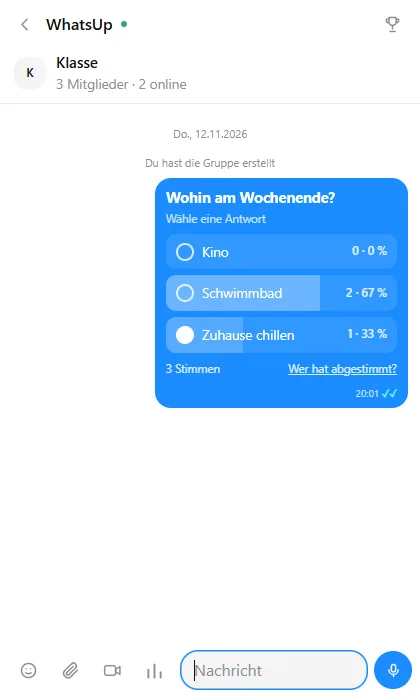
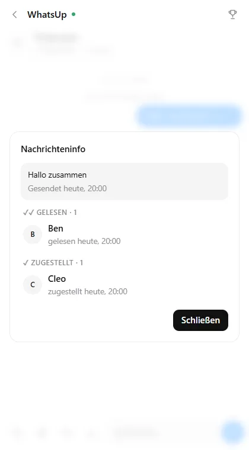
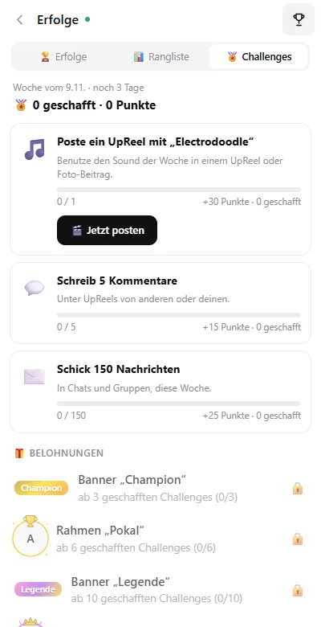
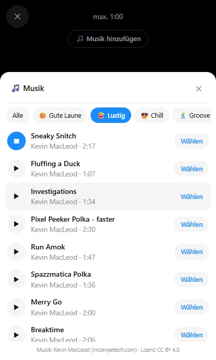

Freunde per Code
Jeder bekommt einen 6-stelligen Code. Code eingeben – fertig. Kein Konto, keine Telefonnummer, keine E-Mail.
Die Chat-App ohne Konto. Freunde per Code hinzufügen und direkt chatten – auf Windows, iPhone und im Browser.
Kostenlos · ohne Telefonnummer · Ende-zu-Ende verschlüsselt · Open Source
Jeder bekommt einen 6-stelligen Code. Code eingeben – fertig. Kein Konto, keine Telefonnummer, keine E-Mail.
Gruppenchats mit Bild und Beschreibung, Umfragen zum Abstimmen und „Gelesen von“ wie bei WhatsApp.
Sprach- und Videoanrufe direkt von Gerät zu Gerät. Sprachnachrichten und Videos mit Kamera-Drehen während der Aufnahme.
Kurzvideos und Foto-Beiträge zum Wischen, mit 46 Songs zum Unterlegen, Likes, Kommentaren und „Sound benutzen“.
Erfolge freischalten, sehen, wie selten sie weltweit sind, und dich in Ranglisten mit anderen messen.
Jede Woche neue Challenges – schaffe sie für Punkte, Abzeichen und exklusive Profilrahmen.
Schreibt euch jeden Tag – und haltet euren Streak am Leben.
Nachrichten gehen direkt zwischen den Geräten. Ist jemand offline, wartet die Nachricht verschlüsselt – der Server kann sie nicht lesen.




K7M2QX.WhatsUp ist ein Hobby-Projekt von Jeremy Jud. Die App ist Open Source (MIT-Lizenz) – der komplette Quellcode liegt auf GitHub.
WhatsUp ist ein unabhängiges Projekt und hat nichts mit WhatsApp oder Meta zu tun.